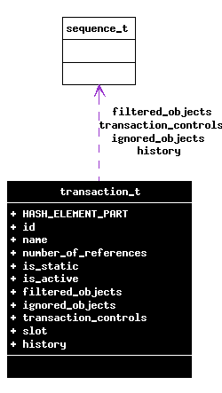

Main Page Data Structures Data Structure Members List File List Globals
transaction_t Struct Reference
#include <transaction.h>
Collaboration diagram for transaction_t:

[legend]
Field Documentation
The documentation for this struct was generated from the following file: